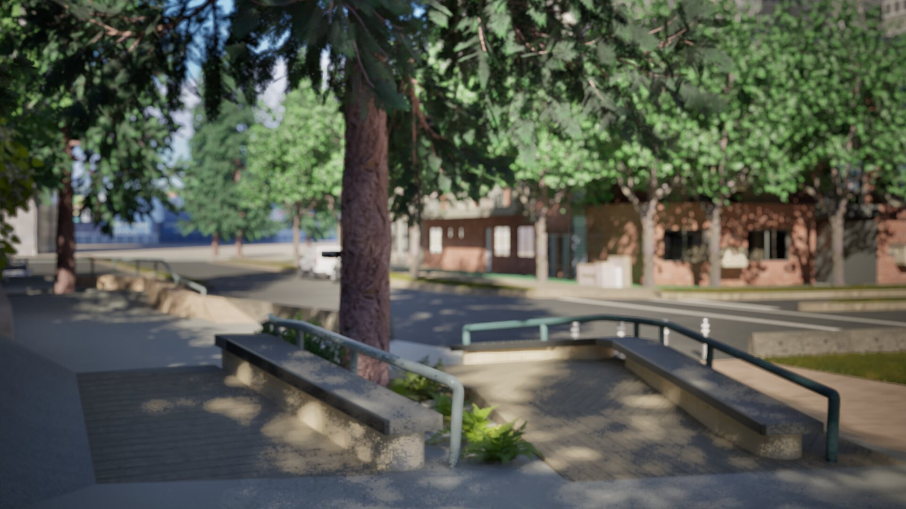
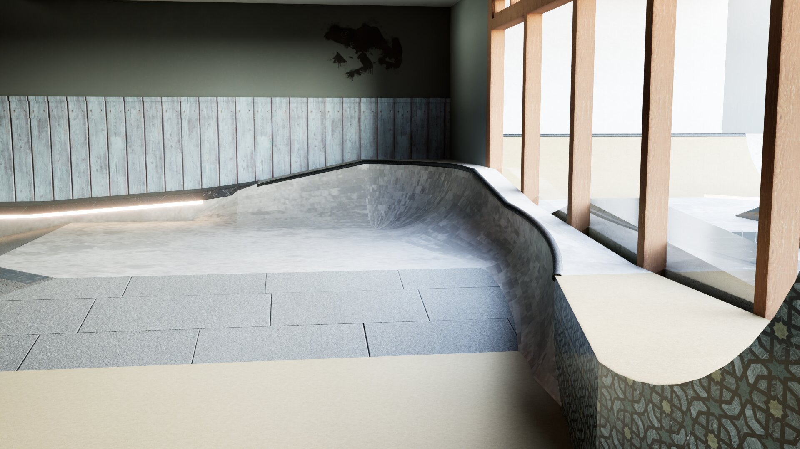
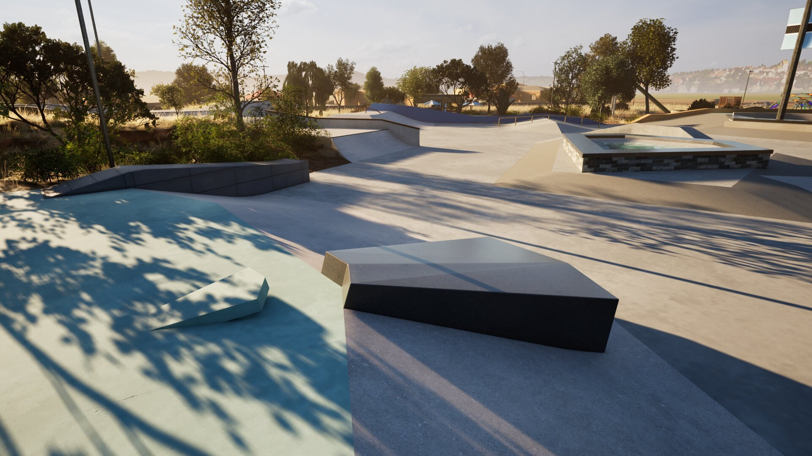

01
Products
Selective products with a point of view. Right now that includes the remaining Canadian run of the SPINE shoe, with future product lanes only if the fit is right.
See the product laneOLOVA is the parent company behind selective products, skatepark and plaza design, and community-linked project work. The focus is simple: bring in what deserves a real chance, build what needs to exist, and help strong ideas move forward properly.
Selective products with a point of view. Right now that includes the remaining Canadian run of the SPINE shoe, with future product lanes only if the fit is right.
See the product laneConcept design and visualization for skateparks, plazas, and public space. Built to help ideas land clearly before they become harder to change.
Open the design pageProjects tied to youth space, advocacy, and culture, including Belong and work connected to the Tri-Cities skate community.
View community work
OLOVA is still taking shape, but it is not starting from zero. The current focus is public-space design work, local community-linked projects, and the remaining Canadian SPINE inventory now sitting in BC.

Belong stays visible on the home page as part of the wider Tri-Cities push for indoor space, youth access, and stronger local skate infrastructure.

The design work gives OLOVA real depth. It shows range across civic concepts, landscape thinking, and skate-focused environments without pretending to be something it is not.
Product question, design inquiry, or community conversation, the goal is the same: keep the structure simple and move good work forward properly.